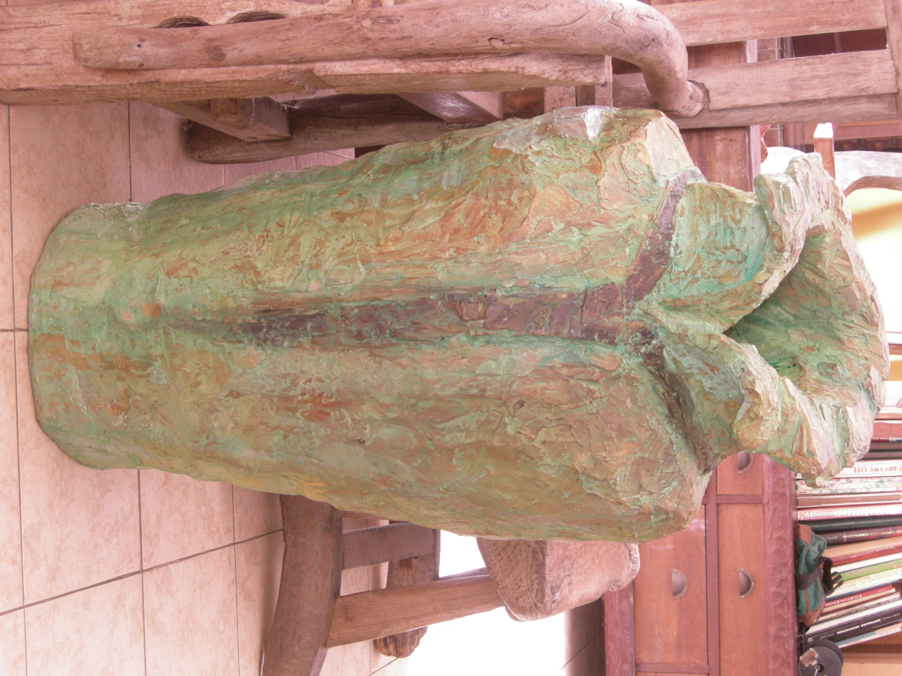
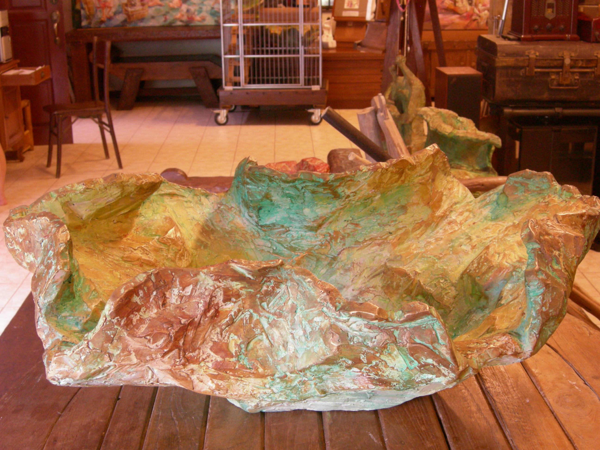
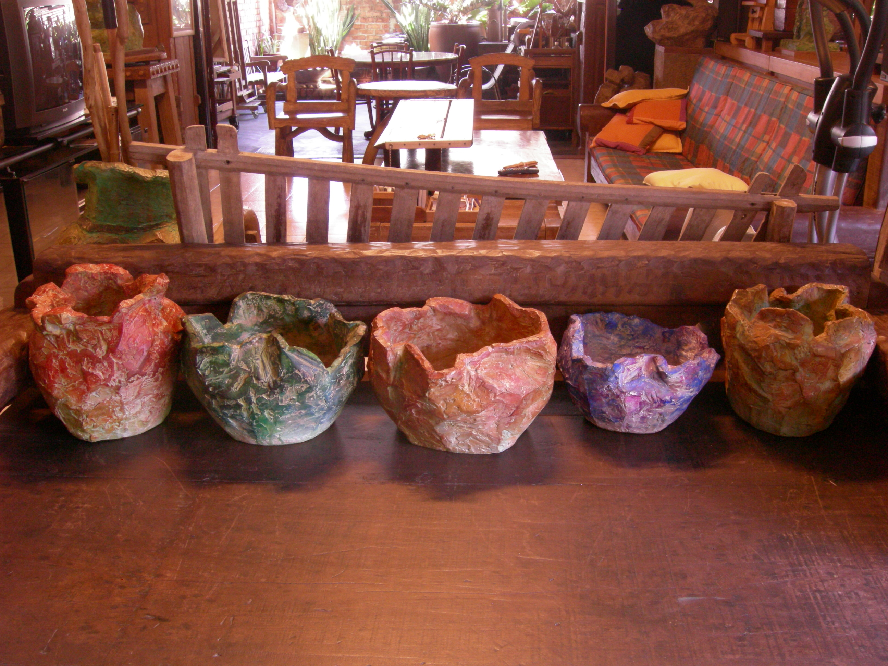
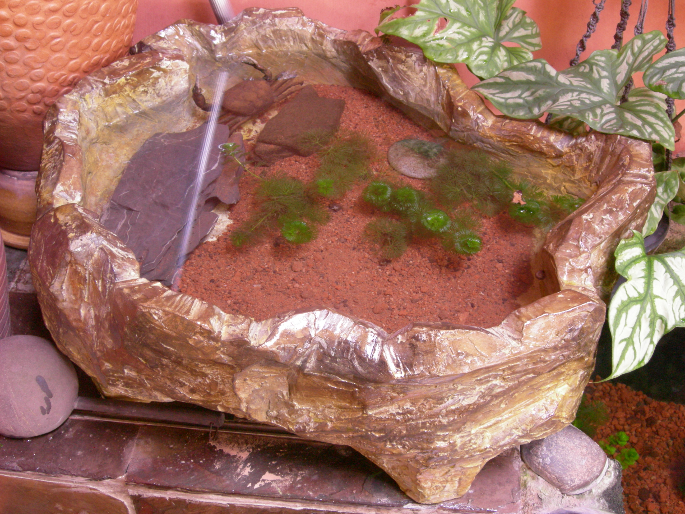
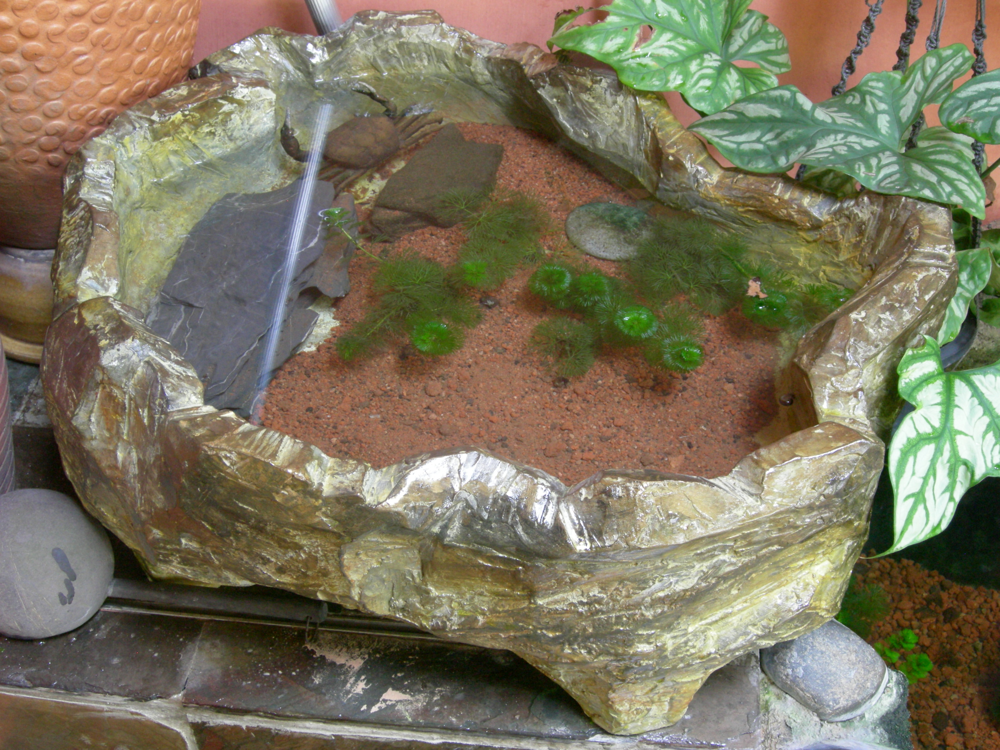
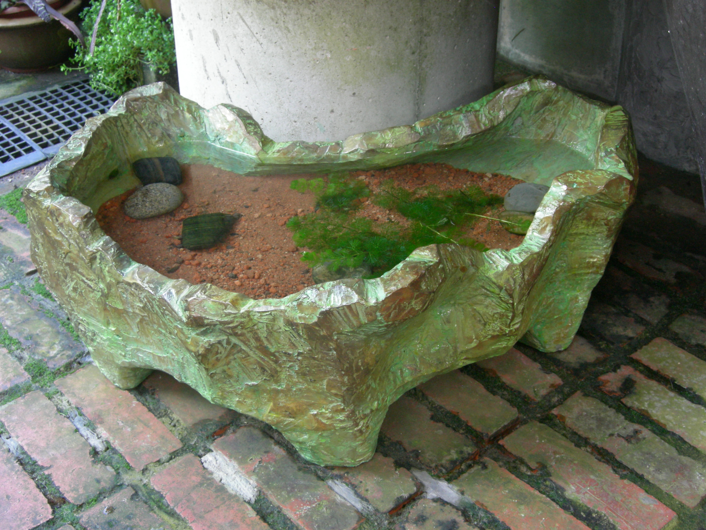
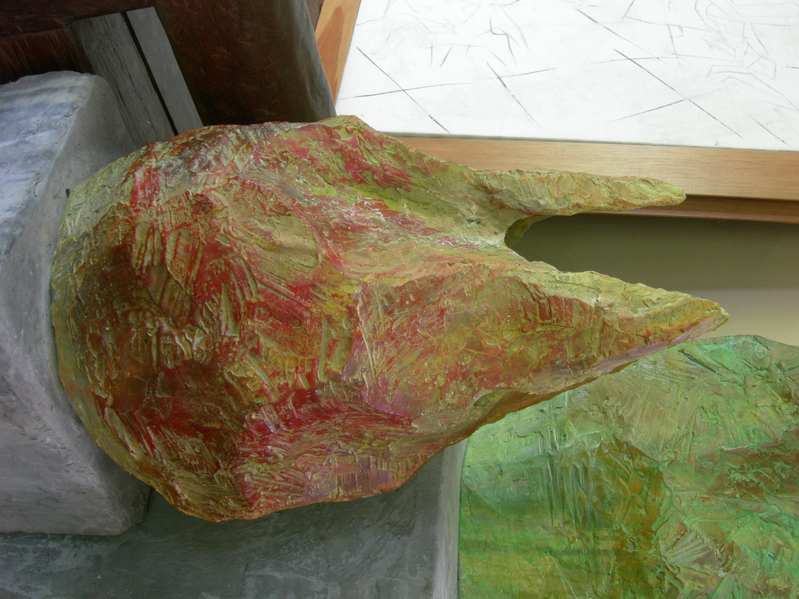
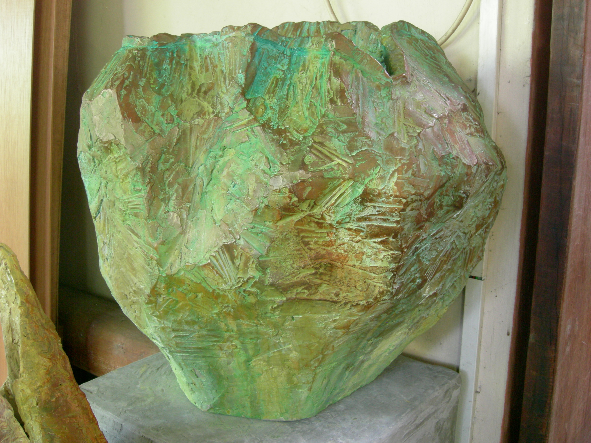
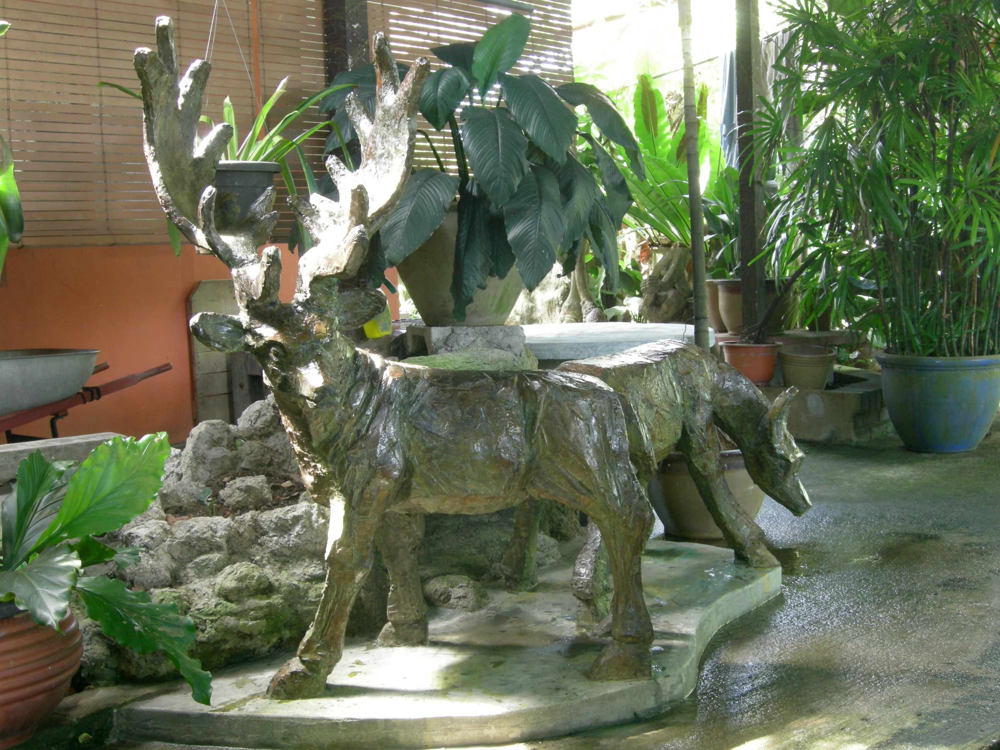

Three-Dimensional Works
Sculpture
Figurative sculptures exploring the human form in moments of rest, contemplation, and daily activity — from paper cast reliefs to freestanding forms.
Figurative sculptures exploring the human form in moments of rest, contemplation, and daily activity — from paper cast reliefs to freestanding forms.
The Sculpture series (2000–2015) extends Loh Ek Sem's documentarian practice into three dimensions. Working primarily in paper cast — his invented medium — Sem creates figurative sculptures that occupy the space between painting and traditional sculpture.
The subjects are drawn from the same well as his paintings: figures at rest, women engaged in domestic tasks, elders in contemplation. But the sculptural form adds a new dimension — literally and figuratively. The viewer can walk around the work, see it from multiple angles, experience the weight and presence of the form.
The series includes 50+ works, from small reliefs (30 × 25cm) to large freestanding figures (118cm height). Materials include paper cast on wood armature, mixed media assemblage, and painted relief.
A full-length figure of a woman in everyday dress, standing in quiet contemplation. The paper cast technique captures the texture of fabric and the subtle weight shift of a body at rest.
A full-length figure in quiet contemplation — the paper cast captures fabric texture and weight shift of a body at rest.

A figure reclining, one arm supporting the head, in a pose that echoes art historical traditions from Giorgione to Modigliani. The paper cast surface retains the artist's hand marks.
A figure reclining in a pose echoing art historical traditions — the paper cast surface retains the artist's hand marks.

A large-scale rooster sculpture — a symbol of vigilance and pride in Malay culture. The textured surface captures the layered quality of feathers through built-up paper cast.
A large-scale rooster — a symbol of vigilance and pride in Malay culture — with textured surface capturing layered feathers.
 3 Qtr.JPG)
A mother holding her child — a universal subject rendered with specific cultural detail. The sarong folds, the way the child nestles into the mother's shoulder, all captured in paper cast.
A mother holding her child — universal subject with specific cultural detail: sarong folds, child nestled into mother's shoulder.

A bust of a figure in deep contemplation — hand to chin, gaze distant. The title is deliberately simple; the act of thinking is universal, yet the features are specifically Malay.
A bust of a figure in deep contemplation — hand to chin, gaze distant. Title deliberately simple; features specifically Malay.

A reclining figure in a moment of self-care, hand raised to hair. The pose is intimate yet dignified, capturing a private moment rendered in the artist's signature paper cast technique.
A reclining figure in a moment of self-care — hand raised to hair, intimate yet dignified, capturing a private moment.

A woman carrying a tray — a gesture of hospitality and service repeated countless times in Malaysian households. The sculpture elevates this everyday act to the level of art.
A woman carrying a tray — gesture of hospitality and service repeated in Malaysian households — elevated to art.

A musician with the sape, the traditional stringed instrument of the Orang Ulu people of Borneo. The sculpture captures both the player and his instrument, a testament to Malaysia's indigenous musical heritage.
A musician with the sape — traditional stringed instrument of Borneo's Orang Ulu — capturing Malaysia's indigenous musical heritage.

A woman reclining with a book — a moment of leisure and intellectual engagement. The sculpture captures the quiet pleasure of reading, the body relaxed in contemplation.
A woman reclining with a book — moment of leisure and intellectual engagement, body relaxed in contemplation.

A mother cradling her child in her arms — the most universal of human subjects, rendered with specific cultural detail. The tenderness of the embrace, the way the child nestles into the mother's body.
A mother cradling her child — universal subject rendered with cultural detail, tenderness of embrace captured in paper cast.
Pots & Ceramics (1998–2010) — Sem's ceramic works extend his sculptural practice into functional and non-functional vessel forms. Hand-built using coiling and slab techniques, these pieces retain the same textural sensibility as his figurative sculptures. The surfaces bear the marks of the making process — finger impressions, tool marks, the uneven rhythm of hand-built walls — treating each pot as a sculptural statement rather than mere craft.
Working with clay allowed Sem to explore form in its purest sense: containment, volume, the relationship between interior and exterior. Some pieces lean toward the utilitarian — water jars, rice containers, offering bowls — while others are purely sculptural, abstract forms that echo the shapes and gestures of his figurative work.

A large storage vessel with textured surface, traditional form reimagined through the artist's sculptural sensibility.
Large storage vessel with textured surface — traditional form reimagined through sculptural sensibility.

A wide bowl with heavily textured exterior surface, the interior smoothed for function.
Wide bowl with heavily textured exterior — interior smoothed for function.

An elegant tall vessel with narrow neck and rounded body, the surface bearing vertical striations that emphasize height.
Elegant tall vessel with narrow neck — vertical striations emphasize height.

A shallow bowl for offerings, the form echoing traditional Malay vessels used in ceremonial contexts.
Shallow bowl for offerings — form echoing traditional Malay ceremonial vessels.

A traditional water storage jar with burnished surface that catches light, the form balanced for carrying.
Traditional water storage jar with burnished surface — form balanced for carrying.

A non-functional sculptural vessel, the form abstract and organic, exploring volume and negative space.
Non-functional sculptural vessel — abstract organic form exploring volume and negative space.

A traditional rice storage container with fitted lid, the surface decorated with incised geometric patterns.
Traditional rice storage container with fitted lid — incised geometric patterns.

A small jar with elegant narrow neck, suitable for storing spices or oils.
Small jar with elegant narrow neck — suitable for spices or oils.

A vessel that transcends function, the form sculptural and expressive, bridging pottery and fine art.
Vessel transcending function — sculptural and expressive, bridging pottery and fine art.
Loh Ek Sem's paper cast technique was developed over years of experimentation. The process transforms recycled paper pulp into a durable sculptural medium that retains the texture and warmth of traditional crafts while achieving the permanence of fine art.
Sculpture extends Sem's documentarian practice into three dimensions. Where paintings capture scenes, sculptures capture presence. The viewer doesn't just observe — they occupy the same space as the subject, walking around, seeing from multiple angles, experiencing the weight and volume of the form.
The figurative tradition in Malaysian art is relatively young, constrained by cultural and religious sensitivities. Sem's sculptures navigate this terrain carefully — these are not idealized nudes but clothed figures engaged in everyday activities. The focus is on dignity, not display.
Explore other series